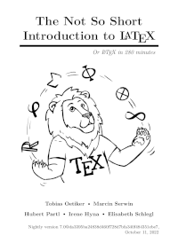

Created Tue 22 Nov 2022 01:59:33 PM AKST
Last Updated Fri 30 Dec 2022 10:48:54 AM AKST
Copyright (C) 2022 by Raymond E. Marcil <marcilr@gmail.com>
Fri 30 Dec 2022 08:25:16 AM AKST
-
Migrated lshort.pdf,
latex2e.pdf,
and usrguide.pdf from
links to filelist.
-
Updated filelist and links
-
Wrapper paged table around links to keep everything
in alignment.
Tue 22 Nov 2022 01:59:33 PM AKST
-
Created initial git/tex/latex/index.html file.
Filelist
|  |
|
lshort-280.pdf (2.2MB)
lshort.pdf ===> lshort-280.pdf
The Not So Short Introduction to LATEX 2ε
or LaTeX in 280 minutes
by Tobias Oetiker, Marcin Serwin, Hubert Partl, Irene Hyna, and Elisabeth Schlegl
Nightly version 7.0@da3395ba24838d460f728d7bfa340f484351ebe7,
October 11, 2022
https://tobi.oetiker.ch/lshort/lshort.pdf
Added Fri 30 Dec 2022 10:18:29 AM AKST
|
usrguide.pdf
LaTeX2e for authors
https://www.latex-project.org/help/documentation/usrguide.pdf
Links
Font style
Changing the Font Style
A dozen odd good font examples where I found \texttt.
Good stuff.
Dickimaw Books
Added these LaTeX font example to my great document
https://www.dickimaw-books.com/latex/novices/html/fontstyle.html
Bold, italics and underlining
https://www.overleaf.com/learn/latex/bold,_italics_and_underlining#Bold_text
Lists and enumerate
LaTeX list – Enumerate and Itemize
1. Unordered lists
2. Ordered lists
3. Nested lists
4. Changing the numbering / bullets
https://latex-tutorial.com/tutorials/lists/
Lists <=== Great links off this page !!!
List are basic elements in a document, when used correctly they keep
concepts organized and structured. This article explains how to create
and modify numbered and unnumbered lists in LaTeX.
https://www.overleaf.com/learn/latex/lists
Tutorial - List in LaTeX
Doxc2LaTeX
https://www.docx2latex.com/tutorials/list-latex/
Difference between LaTeX, LaTeX2e, LaTeX3 ? - TeX - LaTeX Stack ...
https://tex.stackexchange.com/questions/13541/difference-between-latex-latex2e-latex3
LaTeX – A document preparation system
https://www.latex-project.org/
LaTeX - A document preparation system
https://www.latex-project.org
LaTeX2e – everything you need to start
March 11, 2014 7 Replies
Has fine LaTeX 2e graphic
http://andrewcauson.co.uk/latex2e/
LaTeX - Wikipedia
https://en.wikipedia.org/wiki/LaTeX
LaTeX2e unofficial reference manual (May 2022)
http://latexref.xyz/index.html
What is LaTeX2e? | The TeX FAQ
https://texfaq.org/FAQ-latex2e
|